Amir Ghodrati
|
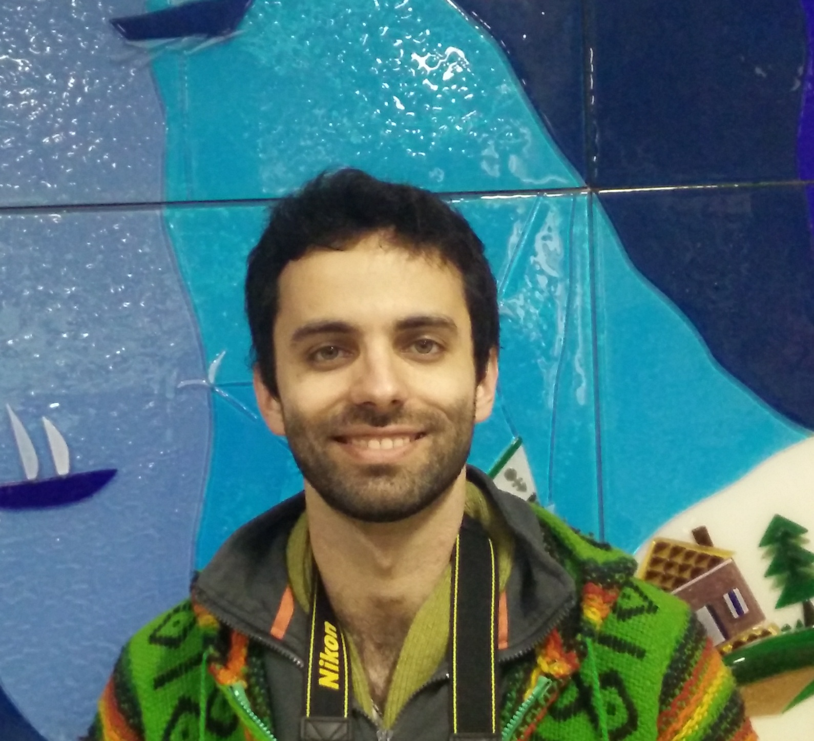 |
Amir Ghodrati () Postdoc at QUVA, Netherlandsroom C3.236 QUVA Lab University of Amsterdam Science Park 904, 1098 XH Amsterdam, The Netherlands [see] ghodrati [at] uva [dot] nl ghodrati [at] gmail [dot] com CV (updated July 2018) Google scholar |
About
As of February 2017, I joined QUVA deep vision lab, a joint group between Qualcomm and the University of Amsterdam (UvA). I am advised by Cees Snoek.
Before that, I was a phd student in PSI at KU Leuven under supervision of Professor Tinne Tuytelaars.
I finished my M.Sc. in Computer Science (Artificial Intelligence) at Sharif University of Technology, Tehran, Iran, advised by Professor Shohreh Kasaei.
I received my B.Sc. degree in Computer Engineering from Amir kabir University of Technology, Tehran, Iran.
My research line of work is in computer vision and pattern recognition .
The main topic of my research is video analysis and translation using deep learning. My work usually involves techniques from pattern recognition, statistics and machine learning.
News
July 2017: One Oral in CVPR and one Spotlight in BMVC!
March 2017: Our journal paper about generating object and action proposals is accepted in IJCV
Feb 2017: I joined QUVA deep vision lab as a postdoc
July 2016: Two of our papers are accepted in ECCV and BMVC
April 2016: Our paper is accepted in TPAMI
December 2015: We published a paper about image generation in arxiv
September 2015: One paper is accepted in ICCV 2015
Research Interests
Video understanding
Representation learning
Image recognition
Publications
| 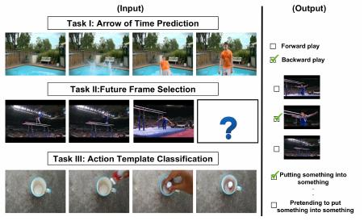 | Video time: Properties, encoders and evaluation
[pdf]
[Project Page]
[code]
|
| 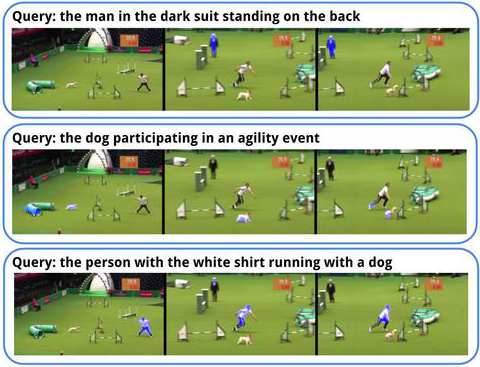 | Actor and action video segmentation from a sentence
[pdf]
[Project Page]
|
| 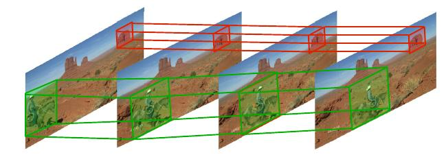 | DeepProposals: Hunting Objects and Actions by Cascading Deep Convolutional Layers
[pdf]
|
| 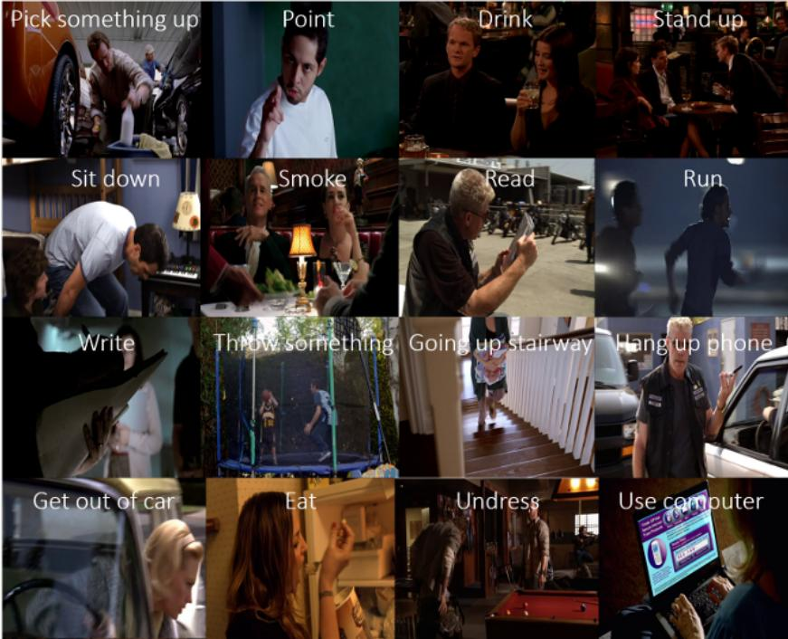 | Online Action Detection
[pdf]
[Project Page]
[code]
|
| 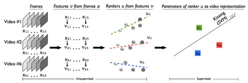 | Rank Pooling for Action Recognition
[pdf]
[code]
|
| 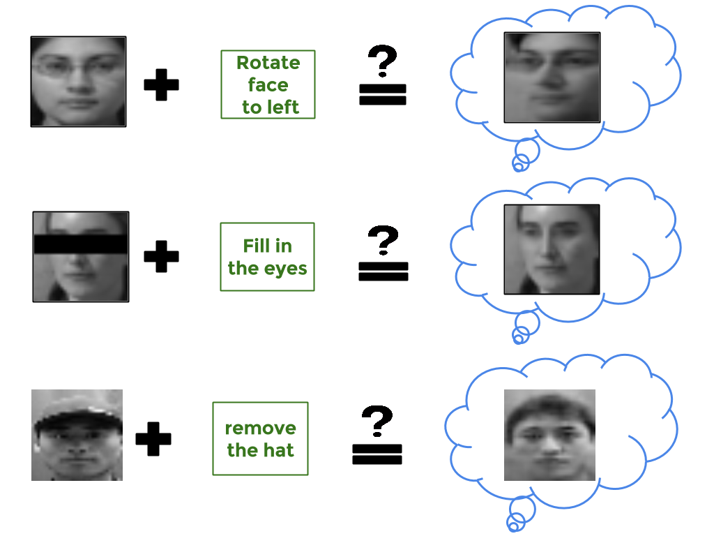 | Towards Automatic Image Editing: Learning to See another You
[pdf]
[supplementary materials]
|
| 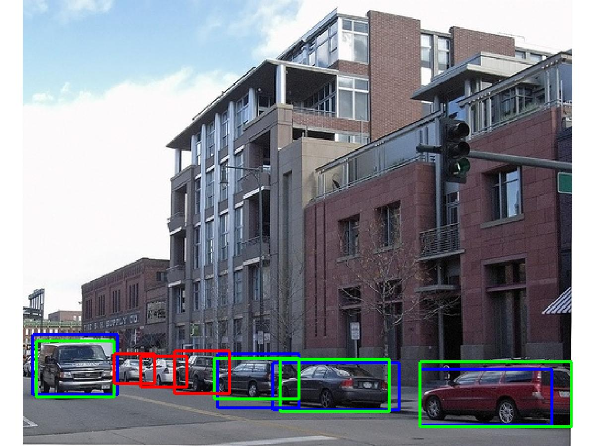 | DeepProposal: Hunting Objects by Cascading Deep Convolutional Layers
[pdf]
[supplementary materials]
[code]
|
| 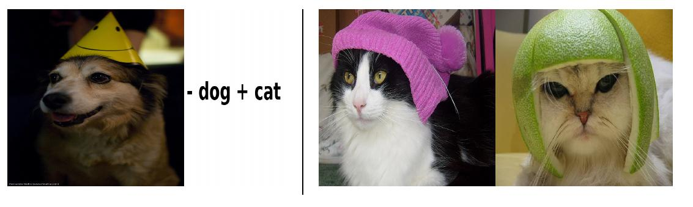 | Swap Retrieval: Retrieving Images of Cats When the Query Shows a Dog
[Link]
[poster]
|
| 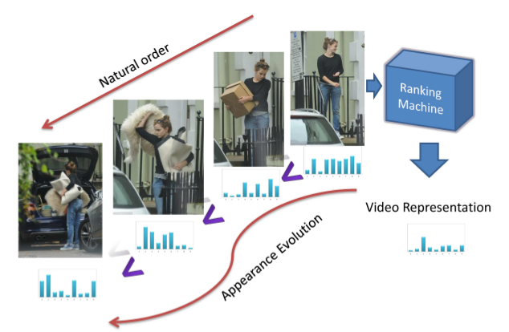 | Modeling Video Evolution For Action Recognition
[pdf]
[code]
|
| 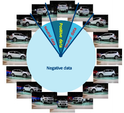 | Is 2D Information Enough For Viewpoint Estimation?
[pdf]
[one-page abstract]
[slides]
[video]
|
| 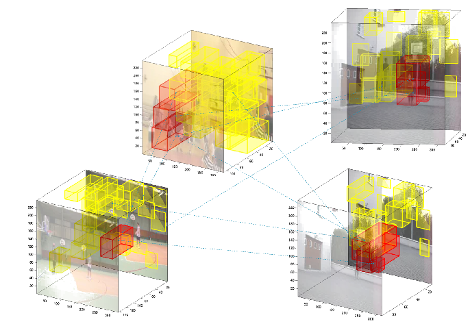 | Coupling video segmentation and action recognition
[Link]
[poster]
[slides]
|
![[poster]](pdfs/ghodrati_wacv14_posterA0.png){kind=link}
| 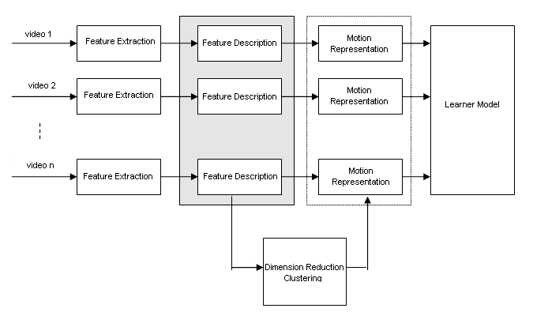 | Human Action Categorization Using Discriminative Local Spatio-Temporal Feature Weighting
[Link]
[abstract]
|
Misc
visitor counter:
|